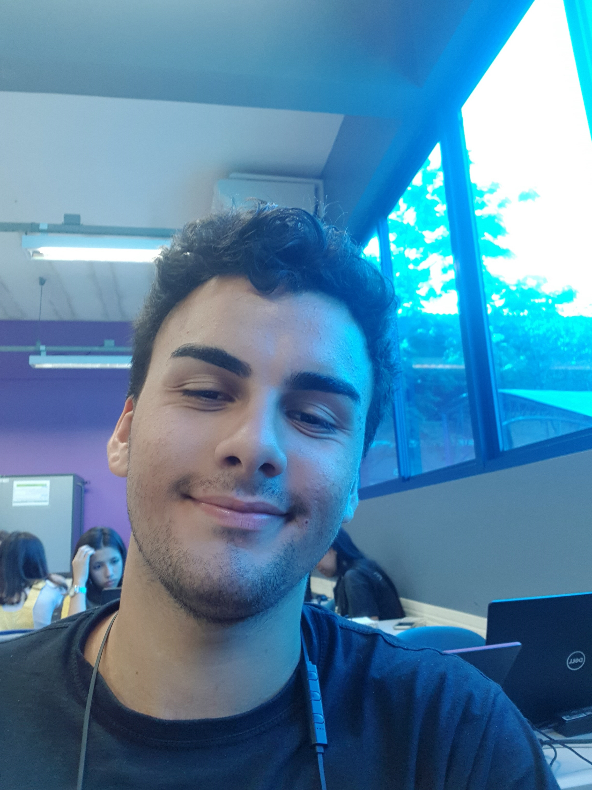
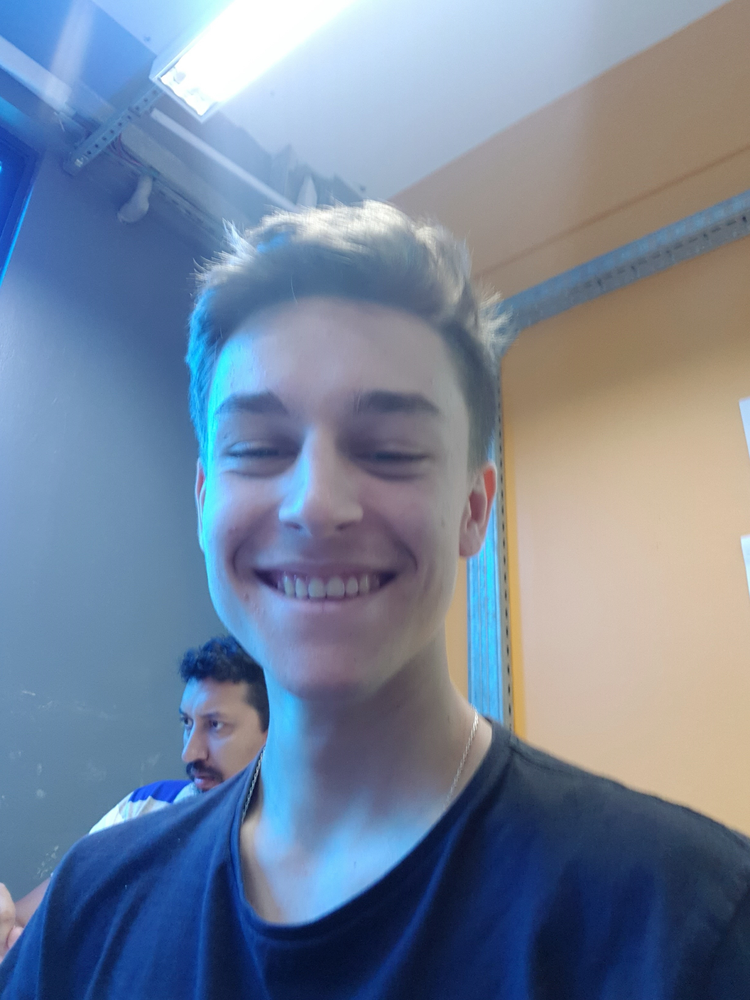
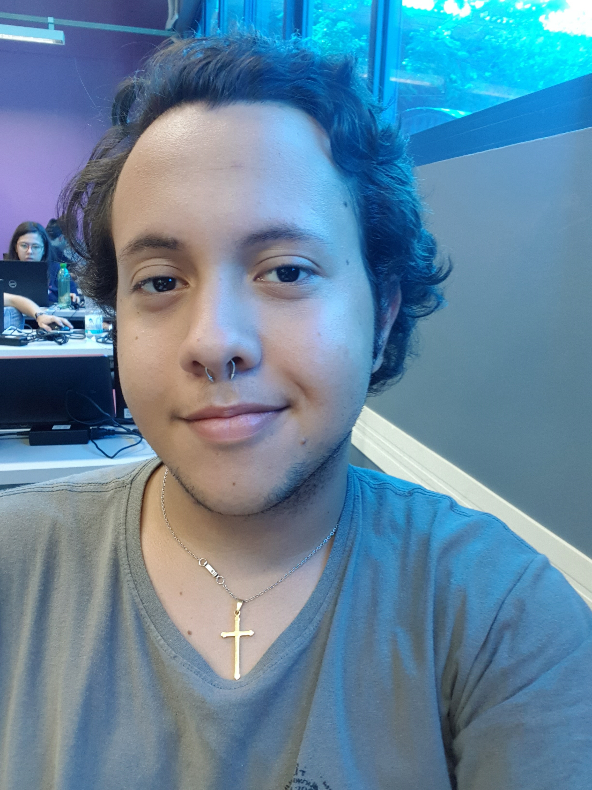
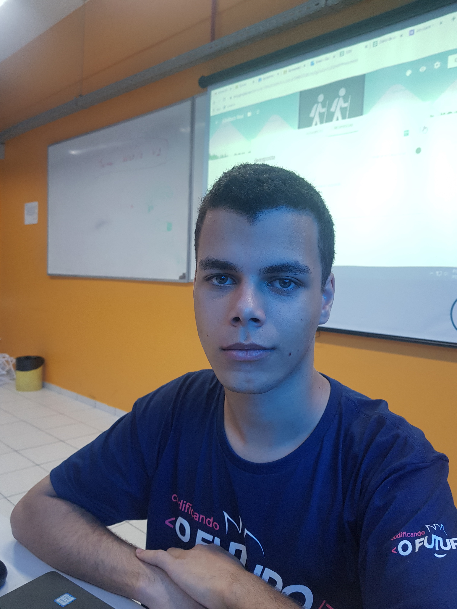

Edi
Nascido em Florianópolis-SC no dia 03/09/2002. Teve seu primeiro contato com a tecnologia aos 6 anos de idade com o curso de Informática Básica.
Após isso começou seus estudos nas áreas de desenvolvimento de jogo, web design e manutenção e assistência de computadores e celulares.
Ficou responsabilizado por designar funções aos outros participantes do grupo e gerenciar o projeto, fez parte do desenvolvimento do programa na parte do CSS e JS.


Nascido em Florianópolis-SC no dia 03/09/2002. Teve seu primeiro contato com a tecnologia aos 6 anos de idade com o curso de Informática Básica.
Após isso começou seus estudos nas áreas de desenvolvimento de jogo, web design e manutenção e assistência de computadores e celulares.
Ficou responsabilizado por designar funções aos outros participantes do grupo e gerenciar o projeto, fez parte do desenvolvimento do programa na parte do CSS e JS.

Caetano
Nascido em Flórianopolis-SC no dia 03/12/2002. Teve seu primeiro contato com a programação no ano de 2018, em um curso de Programação na IFSC, tendo um grande conhecimento em CSS e Bootstrap.
Responsável pelo layout do programa, cuidando da parte visual, desde a transição de imagens e elementos, como a personalização de botões e alertas.
Nascido em Flórianopolis-SC no dia 03/12/2002. Teve seu primeiro contato com a programação no ano de 2018, em um curso de Programação na IFSC, tendo um grande conhecimento em CSS e Bootstrap.
Responsável pelo layout do programa, cuidando da parte visual, desde a transição de imagens e elementos, como a personalização de botões e alertas.

José
Nascido em Manaus-AM no dia 23/04/2002. Começou a jogar videogames e a ter contato frequente com tecnologia aos seus 8 anos de idade, quando teve seu primeiro videogame.
Responsabilizado por toda parte artística do programa, desenvolvendo as imagens, cenários, personagens e fases.
Nascido em Manaus-AM no dia 23/04/2002. Começou a jogar videogames e a ter contato frequente com tecnologia aos seus 8 anos de idade, quando teve seu primeiro videogame.
Responsabilizado por toda parte artística do programa, desenvolvendo as imagens, cenários, personagens e fases.

Kauan
Nascido em Florianópolis-SC no dia 06/03/2003. Introduzido à tecnologia aos 10 anos quando ganhou seu primeiro computador.
Responsabilizado pela parte do JavaScript do programa.
Nascido em Florianópolis-SC no dia 06/03/2003. Introduzido à tecnologia aos 10 anos quando ganhou seu primeiro computador.
Responsabilizado pela parte do JavaScript do programa.